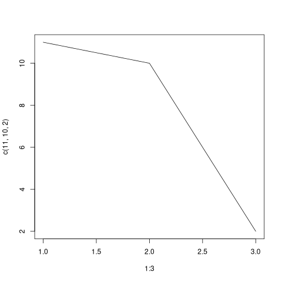
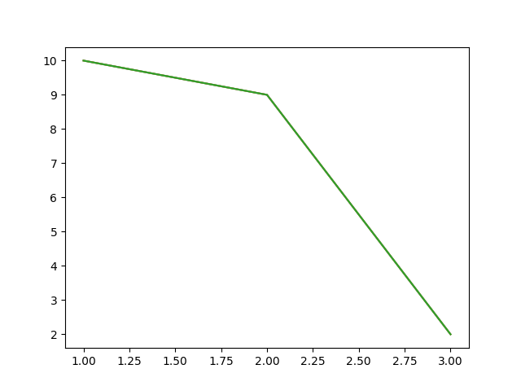

Org-babel plotting requires additional source block arguments: :results graphics file on image R blocks and :results output file in py blocks. This is a little cumbersome, especially because I have a hard time remembering the exact incantation and might end up writing it 10s of times in a document.
One particularly ugly kludge is to
- create new
src_blocktypes as aliases (eg. python=>pyplot). - assign those aliases distinct
#PROPERty: header-args
Headers
#+PROPERTY: header-args:pyplot :cache yes :session :dir /ssh:host:/path :eval noexport :results output file :session *py*
#+PROPERTY: header-args:Rplot :results graphics file :session *R* :cache yesElisp
Org files can modify the emacs environment by sourcing elisp. But ideally this would be in use-package config or as it's own library. Here, using #+begin_src emacs-lisp :eval yes :exports none
(add-to-list 'org-src-lang-modes '("pyplot" . python))
(defalias 'org-babel-execute:pyplot 'org-babel-execute:python)
(add-to-list 'org-src-lang-modes '("Rplot" . R))
(defalias 'org-babel-execute:Rplot 'org-babel-execute:R)R
with the #+PROPERTY: set from above we can use #+begin_src Rplot :file images/exampe-Rplot.png
plot(1:3, c(11,10,2), 'l')
Python
python's plotting isn't as seamless as R. One (slow, binary image printed to emacs buffer) solution comes from
https://emacs.stackexchange.com/a/64667/14118 as below. Easiest to include this in the org-babel document within #+begin_src python :exports none :results none :session)
import sys
import matplotlib.pyplot as plt
def pltsave():
"org hack: save to :file. header also needs ':results output file"
plt.savefig(sys.stdout.buffer)
then using #+begin_src pyplot :file ../images/example-plot.png
plt.plot([1,2,3], [10,9,2])
pltsave()